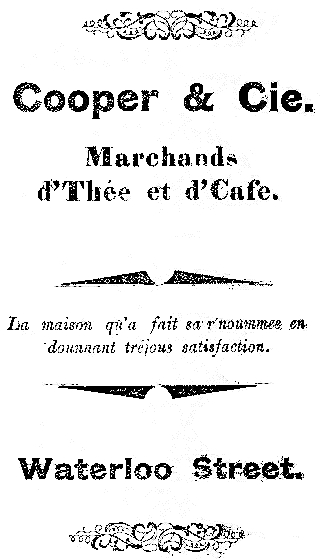
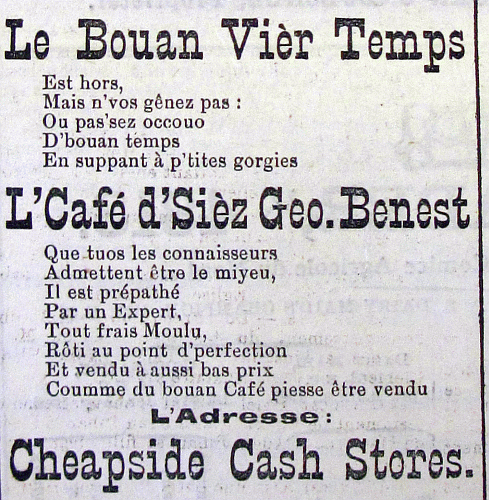
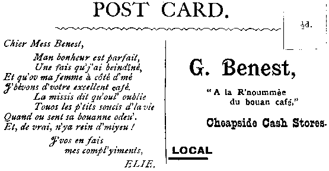

Lé café est eune bouaisson tch'est hardi populaithe. S'nou r'garde les rues d'Saint Hélyi y'en a un tas d'cafés tch'offrent touotes les bénites sortes dé café - à l'Italienne, à l'Améthitchaine, auve du lait ou coumme nou dit "latté", des p'tites tâssées ou des grandes vèrrées ou bein des modgies.
Partout l'monde l'café est pus populaithe qué l'thée au jour d'aniet: nou bait trais fais pus d'café qué d'thée.
Les grainelles dé café sont les graines d'eune p'tite rouoge chérîthe, lé frit d'un bîsson d'originne Êtchiopien. Ches p'tits frits né meûthissent pon sus l'bîsson en même temps, et don nou n'peut pon aîsîment mécannîser l'avoût des chérîthes: il est d'mêtchi d'les tchilyi à la main. Les vèrtes grainelles sont s'parties d'auve la chai d'la chérîthe sait par eune procéduthe dite "mouoillie" par tchi nou hale les grainelles d'la chérîthe épis les trempe à seule fîn d'les faithe fèrmenter et dêpenser la chai, sait par eune procéduthe dite "sècque" par tchi les chérîthes sont s'tchies épis nou s'pathe les grainelles. Un co qu'les vèrtes grainelles sont netties ainchîn, i' sont rôties.
Les gens d'Êtchiopie et d'aut's gens d'Afrique avaient probabliément connu l'frit d'café d'pis les touos vièrs temps. Au Mouoyen Âge des marchands Arabes avaient apporté l'café partout l'monde Arabe et nou s'êcantit à tchultiver la pliante en Arabie étout. Les preunmièrs tch'împortîtent du café d'l'Afrique en Ûrope 'taient l's Arabes au tchînzième siècl'ye, et les marchands dé V'nise en fîtent forteune.
Lé café n'tait pon un grand succès pouor c'menchi en Ûrope (nou l'faîthait sèrvi preunmiéthement coumme d'la méd'cinne) mais douochement nou-s'y prînt l'habitude dans la sociêté faichonnabl'ye des villes Ûropéennes et pouor l'mitan du dgiêx-septchième siècl'ye y'avait des dgèrgottes tchi sèrvaient du café partout l'continnent. Les Hollandais êtablyîtent des pliantâtions d'café en Înde et dans lus colonnies en Âsie, achteu ch'est l'Îndonésie, à la fîn du dgiêx-septchième siècl'ye.
Au c'menchement du dgiêx-huitchième siècl'ye, des marchands d'la France et des Pays Bas împortîtent lé café au Nouvieau Monde où'est qu'nou griyit des pliantâtions d'café. Et pouor tchultiver ches înmenses pliantâtions nou s'fiait honteusement sus l'escliavage.
Ch'est eune ironnie historique qué bein des gens trouvaient d'la libèrté dans des cafés en Ûrope et Améthique où'est des penseurs, des philosophes, des radicaux et des révolutionnaithes soulait lus rassemblier pouor distchuter les problièmes dé l'âge, ouaithe qué lé café qu'i' bûssent 'tait l'produit, véthe, d'la négréthie d'mille pouôrres gens êscliavées.
Au jour d'aniet, la production globale (s'lon les statistiques dé 2013) est dans les 150 millions d'poutchies d'grainelles.
|  |
 |
 |
Viyiz étout: